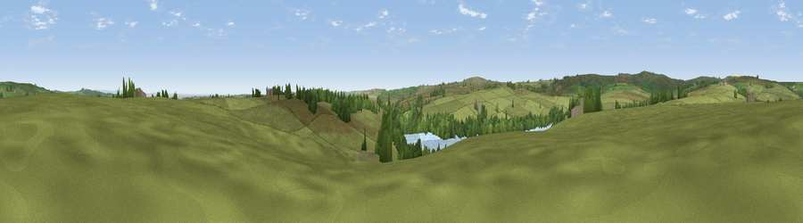

Viewpoint near Blubberhouses
#25864 in England · top 52% of its area beats it · near BlubberhousesThe view, rendered

A 360° render of this exact spot computed from the terrain model, tree cover and land cover — summer colours, afternoon light, calibrated against photographs of famous viewpoints. Real trees, hedges and buildings will differ in detail.
The panorama
Grey silhouette: terrain skyline in each direction (720 bearings, Earth curvature and refraction included). Dashed green: skyline with trees (+15 m) and buildings (+8 m) as obstacles. Blue strip: how far the ground is visible on each bearing.
Where the view opens
Wedge length = distance to the farthest visible ground on that bearing (vegetation-aware). Rings at 10, 25 and 50 km.
What fills the view
85% grassland · 12% woodland · 2% water ·
Angular shares of the visible panorama (visual magnitude), not map area. Landscape diversity 0.23 (0–1 Shannon).
Key numbers
More beautiful places nearby
The staircase of upgrades: each row has a higher view potential than everything closer. Driving times are estimates from straight-line distance, calibrated against real road routing — check an actual route before setting out.
| Place | Direction | Drive | Score |
|---|---|---|---|
| Little Hanging Ridge | SE · 1 km | ~3 min | 50.1 |
| Old Wife Ridge | N · 4 km | ~10 min | 61.8 |
| High Crag Ridge | NNE · 4 km | ~10 min | 67.6 |
| Great Pock Stones | WNW · 6 km | ~13 min | 70.2 |
| Viewpoint near Bewerley | NNW · 6 km | ~13 min | 75.7 |
| Viewpoint near Bewerley | NNW · 6 km | ~14 min | 76.8 |
| Viewpoint near Otley | SSE · 15 km | ~27 min | 77.5 |
| Viewpoint near East Witton | N · 26 km | ~42 min | 77.8 |
54.02249, -1.76300 · source: screening · position refined by local search. Computed location — check access rights before visiting.